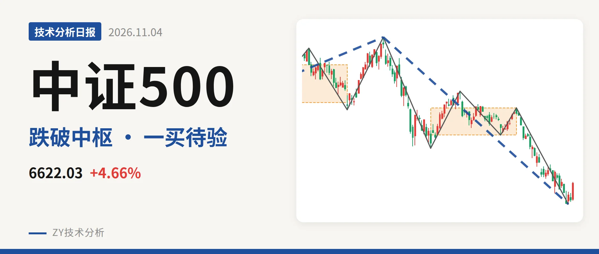
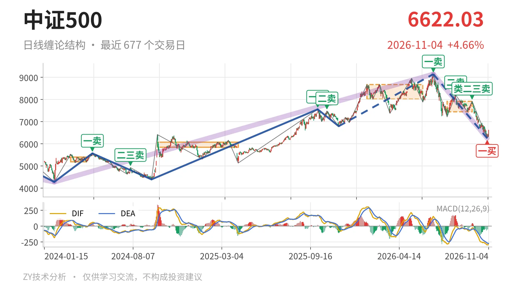
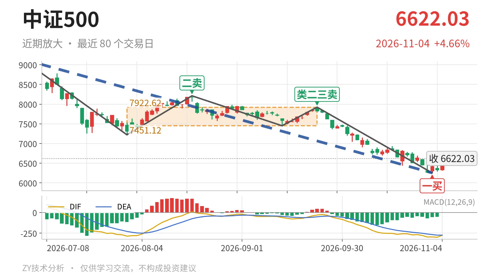

中证500｜失守7451中枢，一买6253点暂稳

最近日线中枢 7451.12—7922.62点，收盘位于中枢之下
一句话：日线中枢下移，反弹未回7451点，结构仍偏弱。
🧭 走势结构：日线下跌段主导，大级别仍在回调
日线7月1日至11月2日的下跌线段没有结束，当前仍在这一下跌段里。更大级别看，2024年2月5日至2026年7月1日的上涨段之后，7月1日以来的下跌段还在延续；2021年9月14日至2024年2月5日的下跌段也未被反向段终结。三段嵌套，当前位置不是单边上涨，而是大级别回调未完成、日线下行段延续的格局。线段级别上，2025年11月24日三买6797.50点已被跌破，尽管该上涨线段还未被反向线段正式结束，其内部结构已进入破坏段。

📦 日线中枢与位置：中枢下移，价格站不上7451点
最新收盘6622.03点已跌破最近日线笔中枢。该中枢为7月30日至9月22日，区间7451.12—7922.62点，最新价低于下沿7451.12点约11.1%。与1月26日至6月8日中枢8014.66—8671.35点相比，两个中枢无重叠，属于中枢下移。11月3日至4日的反抽最高只到6635.58点，连7451点都未触及，说明离开中枢后还没有像样回抽。
🧲 大级别位置：仍在线段中枢上方，但已贴近上沿
更大级别线段中枢看，2022年4月27日至2023年8月4日区间5594.30—6263.16点还在延续。当前6622.03点仍在该中枢上方约359点，但7月1日以来的下跌已经把价格从9147.56点压到该中枢上沿附近。若后续跌入6263点下方，大级别结构将回到该线段中枢震荡；若不跌破6263点，仍可视作对该中枢上沿的回踩。

🎯 买卖点：一买6253点未被破坏，反弹仍在中枢外
日线笔级别卖点在7月1日、8月18日、9月22日分别为一卖9147.56点、二卖8211.31点、类二三卖7922.62点，位置一个比一个低。11月2日出现一买6253.79点，所在笔9月22日至11月2日已经结束，所以这个一买不是暂定。11月3日至4日最低6292.31点，未创新低，一买还未被破坏；但反弹最高只到6635.58点，仍被压在最近中枢下沿7451点之下。后续若跌破6253.79点，一买就只对应更小级别，日线级别一买不再成立。
📉 背驰：绿柱面积收缩，DIF未同步抬高
11月2日一买前，同向对比7月1日至7月30日下跌笔与9月22日至11月2日下跌笔。后者把价格从7221.95点压到6253点新低，但绿柱面积由2687缩到1782，价格新低而面积没有跟随。DIF低点却从-285.2继续下探到-295.6，没有形成“新低不新弱”的完整配合。最新DIF仍在零轴下方，柱值仅-2.2，说明下跌动能减弱，但反弹也没有站上中枢下沿，力度有限。
🔎 关键位置观察：7451点反抽不进则三卖，6253点破位则降级
结构强弱只看两处：7451点和6253点。若后续反抽回不到7451点上方，结构上构成日线笔级别三卖，下跌段继续主导。若能重新站上7451点并向7923点附近回升，7月1日以来的下跌更可能只是中枢扩展。若6253.79点失守，11月2日一买降为更小级别，下方结构观察位看5594点附近。当前6622.03点夹在两者之间，较11月2日低点回升约5.9%，但反弹未摸到中枢下沿，弱在中枢下沿未收复，结构偏弱。
⚠️ 本文为基于公开行情数据的缠论技术结构记录，由程序自动计算并生成，仅供学习交流，不构成任何投资建议。市场有风险，投资需谨慎。